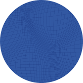
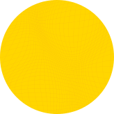
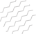

Bloque 01
¿Quiénes somos?
El aliado tecnológico del Consejo Nacional Electoral para la gestión y fortalecimiento de los actores electorales en las elecciones Colombia 2026.



Conoce la Unión Temporal Actores Electorales 2026, el aliado tecnológico del CNE que garantiza transparencia y legitimidad en las elecciones presidenciales del 31 de mayo.
El aliado tecnológico del Consejo Nacional Electoral para la gestión y fortalecimiento de los actores electorales en las elecciones Colombia 2026.
Desarrollamos y operamos herramientas tecnológicas que permiten a las agrupaciones políticas gestionar a sus actores electorales de manera eficiente, transparente y trazable — cubriendo el proceso completo desde la postulación hasta el seguimiento en tiempo real el día de las elecciones.
Ponemos a disposición de las agrupaciones políticas y actores electorales un ecosistema tecnológico que acompaña todo el ciclo electoral, de principio a fin.
Las agrupaciones políticas registran y gestionan a sus actores en la plataforma, en igualdad de condiciones y sin trámites físicos.
Cada actor electoral es validado y habilitado con credenciales digitales únicas y código QR verificable en tiempo real por la Fuerza Pública.
Formación presencial en todos los departamentos del país y cursos virtuales gratuitos para que cada actor conozca su rol.
A través de la App Comitium en Línea, los testigos reportan novedades y se digitalizan los resultados el día 31 de mayo.
¡Misión cumplida! Así impactamos exitosamente en las elecciones del Congreso: